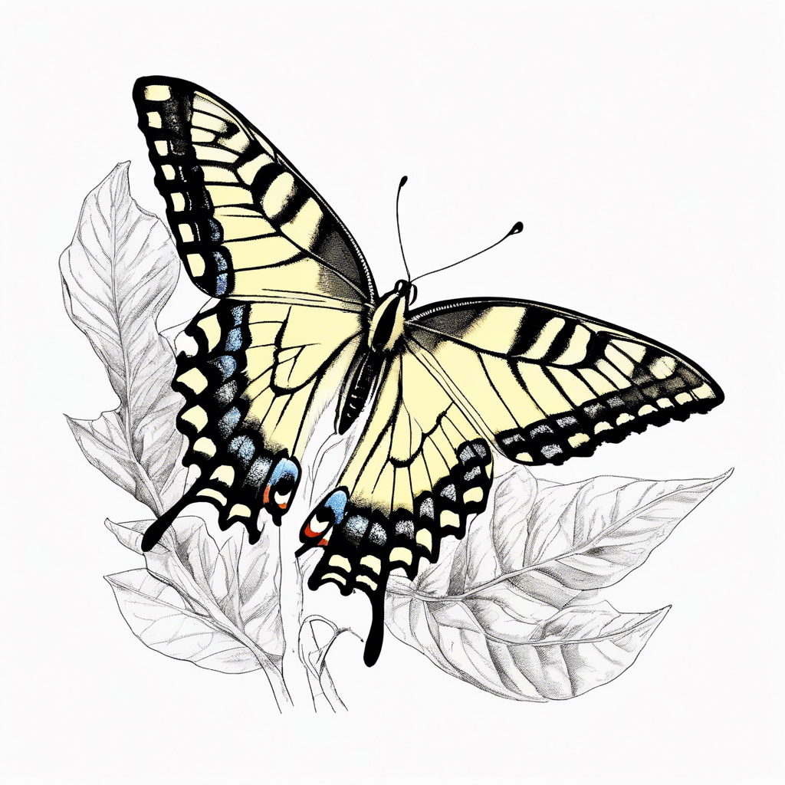

멋진 호랑나비

호랑나비 소개
호랑나비는 우리나라에서 볼 수 있는 가장 큰 나비 중 하나예요. 노란색 바탕에 검은색 줄무늬가 있어서 호랑이를 닮았다고 해서 이름이 붙었답니다.
날개를 펼치면 10-12cm나 되는 큰 나비예요!
호랑나비의 생활
- 봄부터 가을까지 볼 수 있어요
- 제비꽃의 잎을 먹고 자라요
- 꽃의 꿀을 먹어요
- 알에서 애벌레, 번데기를 거쳐 나비가 돼요
재미있는 사실!
호랑나비는 산과 들에 사는 제비꽃을 특히 좋아해요. 애벌레는 제비꽃의 잎을 먹고 자라고, 어른 나비는 제비꽃의 꿀을 먹어요.
하얀 배추흰나비

배추흰나비 소개
배추흰나비는 하얀색 날개를 가진 작고 귀여운 나비예요. 우리 주변에서 가장 흔하게 볼 수 있는 나비랍니다.
날개를 펼치면 4-5cm 정도의 크기예요.
배추흰나비의 생활
- 봄부터 가을까지 볼 수 있어요
- 배추, 무의 잎을 먹고 자라요
- 꽃밭에서 꿀을 먹어요
- 도시에서도 잘 살아요
재미있는 사실!
배추흰나비의 애벌레는 초록색이에요. 배추잎 위에 있으면 잘 보이지 않아 적으로부터 숨을 수 있답니다!
큰 산누에나방

산누에나방 소개
산누에나방은 세계에서 가장 큰 나방 중 하나예요. 날개를 펼치면 25cm나 되는 거대한 크기랍니다!
아름다운 무늬가 있는 큰 날개를 가지고 있어요.
산누에나방의 생활
- 밤에 활동하는 야행성이에요
- 애벌레는 나뭇잎을 먹고 자라요
- 어른 나방은 먹이를 먹지 않아요
- 큰 날개로 천천히 날아다녀요
재미있는 사실!
산누에나방은 어른이 되면 먹이를 먹지 않아요! 애벌레 때 저장한 영양분으로 살아간답니다.